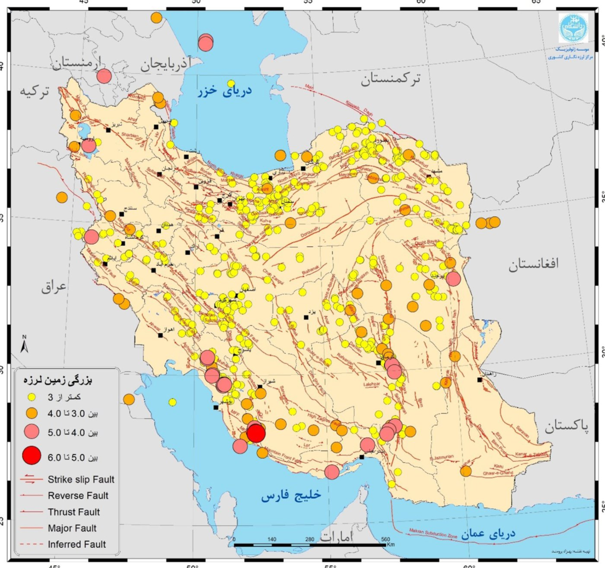

گزارش حوادث و سوانح دیماه ۱۴۰۳
تصویری از ۲۵ رخداد ثبتشده در کشور، از سیلاب میناب تا زلزلههای جم. روی نقشه هر رخداد را ببینید، بر اساس نوع مخاطره جدا کنید و جزئیات هر استان را بخوانید.
رخداد ثبتشده
۲۵
در ۵ نوع مخاطره
استان درگیر
۲۷
از ۳۱ استان کشور
جانباخته
۶ نفر
آتشسوزی و سرمازدگی
مصدوم
۱۵ نفر
در ۴ آتشسوزی
بزرگترین زلزله
۵٫۲
جم، استان بوشهر (۱۷ دی)
نقشه رخدادهای دی ۱۴۰۳
رنگ هر استان تعداد رخدادهای آن را نشان میدهد. روی یک نشانه یا یک استان بزنید.
{{loadingText}}
استان {{hoverName}}
{{hoverCount}}
تعداد رخداد در استان:
۰
۱
۲
۳
۴ و بیشتر
نشانهها مکان تقریبی شهرستان یا مرکز استان را نشان میدهند. اندازه نشانه زلزله به بزرگای آن بستگی دارد.
گاهشمار دیماه
هر نقطه یک رخداد است و در روز آغاز آن آمده است.فهرست رخدادها
همان ۲۵ مورد گزارش، به ترتیب نوع مخاطره. با زدن هر ردیف، رخداد روی نقشه نشان داده میشود.
نقشه رومرکز زلزلههای دی ۱۴۰۳
همه زمینلرزههای ثبتشده در دیماه، از بزرگای کمتر از ۳ تا بین ۵ و ۶، همراه با گسلهای اصلی کشور. هفت زلزلهای که در فهرست بالا آمدهاند آنهایی هستند که بزرگای ۴٫۵ یا بیشتر داشتند.
کمتر از ۳
بین ۳ تا ۴
بین ۴ تا ۵
بین ۵ تا ۶
منبع: مؤسسه ژئوفیزیک دانشگاه تهران، مرکز لرزهنگاری کشوری

هدف
این گزارش با هدف اطلاعرسانی و آگاهیبخشی به مدیران، تصمیمگیران، فعالان و پژوهشگران حوزه مدیریت حوادث و سوانح ارائه شده است. گزارش حاضر تصویر حوادث و سوانحی است که در بازه زمانی ۱ تا ۳۰ دیماه ۱۴۰۳ در کشور رخ دادهاند.
سیمای کلی
- در این گزارش، حوادث و سوانح منطبق با مخاطرات شناختهشده در سند راهبرد ملی مدیریت بحران (مصوب سال ۱۴۰۰ شورای عالی مدیریت بحران کشور) درج شدهاند.
- حوادث و سوانح دارای آسیب جانی (جانباخته و مصدوم)، خسارات اقتصادی و اثرات اجتماعی در این گزارش بر اساس الگوی «نام حادثه استان؛ شهرستان: تاریخ، خسارت» ارائه شده است.
- حوادث و سوانح «بدون اعلام خسارت» به معنای عدم اعلام آمار و اطلاعات رسمی از سوی سازمانها و دستگاههای مسئول در قانون مدیریت بحران کشور است و به معنای نداشتن خسارت نیست.
- این گزارش نسخه ۰۱ است و بر اساس اطلاعات در دسترس تهیه شده است. اگر اطلاعات بهروزشدهای از سوی سازمانها و دستگاههای مسئول برسد، در نسخههای بعدی اعمال میشود.
- نقشه رومرکز زلزلههای ثبتشده در دی ۱۴۰۳ مطابق با گزارش مؤسسه ژئوفیزیک دانشگاه تهران ارائه شده است.
نسخه کامل گزارش
برای پرسش یا اصلاح اطلاعات با مرکز مدیریت اطلاعات و مستندسازی حوادث و سوانح در تماس باشید.